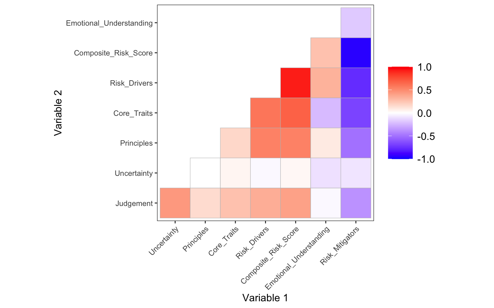
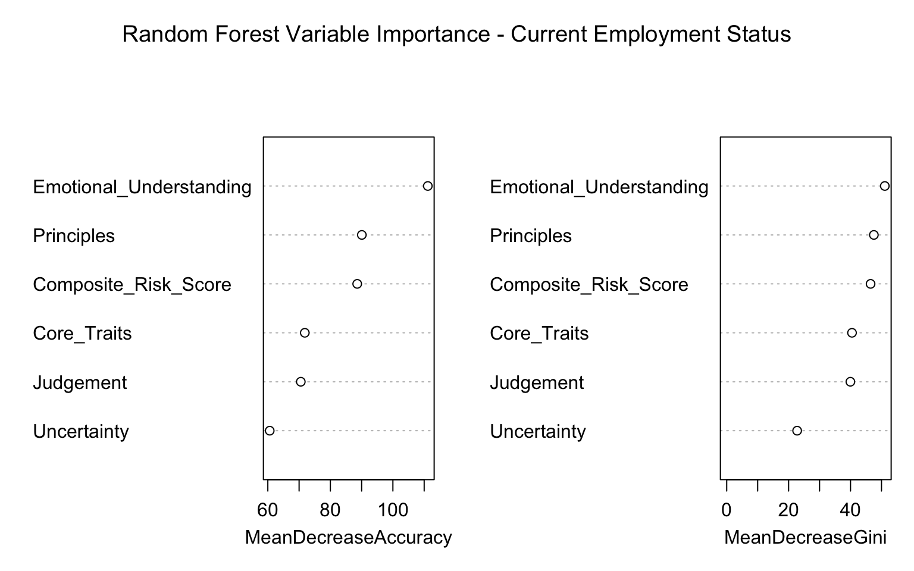

This report presents an example analysis of how psychometric assessment scores relate to real-world employment and placement outcomes among candidates in a training and placement programme.
Background
Candidates were screened using the Dynamic Risk Assessment as part of the recruitment process.
Following successful selection, a follow-up survey was administered to track key employment outcomes, including placement completion, specialised training uptake, absorption by host companies, further studies, and current employment status.
Purpose
The primary goal of this analysis is to evaluate the predictive validity of the DRA — that is, whether the risk scores can meaningfully distinguish between different outcome groups and help forecast long-term success.
Methods Overview
Descriptive statistics and visual comparisons of risk scores across outcome categories
SMOTE oversampling to address class imbalance in predictive modelling
ROC curves for discrimination
Random forest modelling for classification and predictor importance
Important Notes on Data & Presentation
All data is simulated to match realistic distributions, correlations, and patterns from the original analysis. No real data is included.
To protect intellectual property, DRA dimension names have been generalised.
This section provides an overview of the simulated data, including correlations among DRA dimensions and risk scores, outlier detection, and group comparisons across key outcomes.
Correlations Among DRA Dimensions & Risk Scores
The Spearman correlations show strong interrelationships among the DRA dimensions and risk components:
Risk Mitigators shows a strong, negative association with Risk Drivers (-0.77, p<0.001), as expected in the assessment design.
Similarly, the Composite Risk Score shows a strong, positive correlation with Risk Drivers (0.92, p<0.001) and a strong negative correlation with Risk Mitigators (-0.95, p<0.001).
Weak or non-significant correlations (e.g., Uncertainty with Principles, r=0.00) highlight independent aspects of the profile.
Warning: `aes_string()` was deprecated in ggplot2 3.0.0.
ℹ Please use tidy evaluation idioms with `aes()`.
ℹ See also `vignette("ggplot2-in-packages")` for more information.
ℹ The deprecated feature was likely used in the ggcorrplot package.
Please report the issue at <https://github.com/kassambara/ggcorrplot/issues>.

Checking for Outliers
Show code
# Detecting outliers using the IQR method Q1 <-quantile(raw_data$Composite_Risk_Score, 0.25)Q3 <-quantile(raw_data$Composite_Risk_Score, 0.75)IQR <- Q3 - Q1outliers <-which(raw_data$Composite_Risk_Score< (Q1 -1.5* IQR) | raw_data$Composite_Risk_Score > (Q3 +1.5* IQR))if (length(outliers) >0) {# Extract the values of outliers outlier_values <- raw_data$Composite_Risk_Score[outliers]# Print valuesprint(raw_data)} else {print("No outliers were found using the IQR method.")}
[1] "No outliers were found using the IQR method."
No outliers were detected in the Composite Risk Score using the IQR method, suggesting the data is free from extreme values that could skew results.
Employees who are still completing their placement contract had the lowest average composite risk score (31.49) whereas employees who did not complete their placement contracts had the highest average composite risk score (36.06).
The most common employment status is Temporary Contract (54.4%), followed by Unemployed (25.8%). Self employed was excluded due to rarity (n=1) resulting in a sample size of 216.
Employees with part-time contracts have the highest average composite risk (38.52), while candidates who are currently unemployed have the lowest (28.59).
Show code
ggplot(raw_data, aes(x = Current_Employment_Status,y = Composite_Risk_Score, fill = Current_Employment_Status)) +geom_boxplot(outlier.color ="red", outlier.shape =16) +labs(title ="Distribution of Composite Risk Score by Current Employment Status",x ="Current Employment Status",y ="Composite Risk Score") +theme_minimal() +theme(legend.position ="none",plot.title =element_text(hjust =0.5, face ="bold"),axis.text.x =element_text(angle =45, hjust =1)) +scale_fill_manual(values =c("Unemployed"="red", "Full_time"="darkgreen", "Part_time"="gold","Temporary_Contract"="darkorange"))
Only 7.4% of employees were absorbed by their respective host company. However, this variable is likely skewed because the economy is saturated and businesses cannot accommodate more employees rendering this criterion relatively less useful for prediction.
Only 8.8% pursued further studies however this is likely influenced by various external factors such as age, current level of education, and affordability.
FS_dimension_summary_long <- FS_dimension_summary %>%pivot_longer(cols =c(2:6), names_to ="Dimensions", values_to ="Mean_Score") %>% dplyr::mutate(Dimensions =as.factor(Dimensions))ggplot(FS_dimension_summary_long, aes(x = Dimensions, y = Mean_Score, fill = Further_Studies)) +geom_bar(stat ="identity", position ="dodge") +geom_text(aes(label =round(Mean_Score, 2)),position =position_dodge(width =0.9),vjust =-0.2, size =3.2, color ="black" ) +labs(x ="DRA Dimensions", y ="Mean Risk Score", title ="Mean DRA Dimension Risk Scores by Further Studies") +theme_minimal() +theme(legend.position ="right",plot.title =element_text(hjust =0.5, face ="bold"),panel.grid.major =element_blank(), panel.grid.minor =element_blank(), axis.text.x =element_text(angle =45, hjust =1)) +scale_fill_manual(values =c("No"="#7F8C8D", "Yes"="#27AE60"))
SMOTE Sampling
Synthetic Minority Over-sampling Technique (SMOTE) was used to address class imbalances before additional analyses were performed. SMOTE identifies a minority sample, finds its 𝑘-nearest neighbors, and generates new synthetic data points so that classes are equally represented.
Show code
# Each of the outcome variables is treated separately as the target for SMOTE.# After applying SMOTE for one target, you get a new balanced data set only for that target. Thus, you end up with five separate balanced data sets (one for each outcome variable).# Drop empty levels after filtering. smote_data <- raw_data %>%mutate(Current_Employment_Status =droplevels(Current_Employment_Status))
Show code
# Apply SMOTE for each target variable separately# ────────────────────────────────────────────────────────────────# 1. Placement_Contract_Completion set.seed(2025)balanced_contract <-smotenc(df = smote_data, # full data framevar ="Placement_Contract_Completion", # target column name (must be factor)k =5, # nearest neighborsover_ratio =1# 1 = balance to 1:1; >1 oversamples minority more)# Check resulttable(balanced_contract$Placement_Contract_Completion) /nrow(balanced_contract)
Analysis of Predictive Performance Using ROC Curves
Logistic regression models were used to examine the extent to which three DRA variables (i.e., predictors) could discriminate between two binary outcomes.
Two outcomes selected for this analysis:
Specialised Training Completion (Yes / No)
Further Studies (Yes / No)
Predictors Used
The models use these three variables:
Composite Risk Score
Principles
Emotional Understanding
For each outcome, the data were split into training (80%) and test (20%) sets using stratified sampling to maintain class proportions. Logistic regression models were fitted on the training data, and performance was evaluated on the held-out test set.
Key Metric Definitions in Context
AUC (Area Under the ROC Curve): Measures overall ability to rank candidates correctly. AUC = 0.5 means no discrimination (random guessing); AUC > 0.7–0.8 is generally useful in applied settings.
Accuracy: Overall % correct predictions (TP + TN) / total
Precision (for Yes): Of all candidates predicted to complete training / pursue further studies, what % were actually Yes? (TP / (TP + FP))
Recall (for Yes): What proportion of actual Yes cases does the model correctly identify as Yes? Formula: TP / (TP + FN)
AUC: 0.512
Confusion Matrix:
Truth
Prediction No Yes
No 16 15
Yes 23 24
Accuracy: 0.513
Precision: 0.511 (for Yes)
Recall: 0.615 (for Yes)
F1-score: 0.558
Specialised Training Completion (Yes/No)
AUC: 0.529 (near-random discrimination)
Metrics
Accuracy: 0.514 (correct classifications ~51%)
Precision (Yes): 0.512 — Of predicted Yes, 51.2% were actual Yes
Recall (Yes): 0.611 — Caught 61.1% of actual Yes cases
F1-score (Yes): 0.557 — Balanced precision/recall
Confusion Matrix Breakdown
This shows how the model classified the test set (using 0.5 probability threshold). - True Negatives (TN): 15 candidates correctly predicted as No - False Negatives (FN): 14 candidates wrongly predicted as No (actually Yes) - False Positives (FP): 21 candidates wrongly predicted as Yes (actually No) - True Positives (TP): 22 candidates correctly predicted as Yes
Insight: The model struggles to distinguish training completion. This outcome may depend more on programme factors than initial risk scores.
Further Studies (Yes/No)
AUC: 0.512 (near-random discrimination)
Metrics
Accuracy: 0.513 (correct classifications ~51%)
Precision (Yes): 0.511 — Of predicted Yes, 51.1% were actual Yes
Recall (Yes): 0.615 — Caught 61.5% of actual Yes cases
F1-score (Yes): 0.558 — Balanced precision/recall
Confusion Matrix Breakdown
This shows how the model classified the test set (using 0.5 probability threshold). - True Negatives (TN): 16 candidates correctly predicted as No - False Negatives (FN): 15 candidates wrongly predicted as No (actually Yes) - False Positives (FP): 23 candidates wrongly predicted as Yes (actually No) - True Positives (TP): 24 candidates correctly predicted as Yes
Insight: Similar to training completion, the three predictors explain almost nothing about whether employees pursue further studies.
Overall ROC Insight: For these specific outcomes, the predictors (i.e., Principles, Emotional Understanding, and Composite Risk) showed limited discriminate ability and modest classification performance on the balanced test sets. Combining with other data (e.g., engagement metrics) could improve validity.
Predictive Modeling - Random Forest
First, a random forest model (2000 trees) was trained to predict Employment Status using the following predictors: Core Traits, Emotional Understanding, Judgement, Principles, Uncertainty, and Composite Risk Score.
############################################################# Train / test split (70 / 30) ############################################################set.seed(2025)train_index <-createDataPartition( balanced_employment_status_RF_df$Current_Employment_Status, p =0.7, list =FALSE)train_data <- balanced_employment_status_RF_df[train_index, ]test_data <- balanced_employment_status_RF_df[-train_index, ]cat("Training set rows:", nrow(train_data), "\n")
Training set rows: 332
Show code
cat("Test set rows: ", nrow(test_data), "\n\n")
Test set rows: 140
Show code
############################################################# Fit Random Forest model (multi-class)############################################################rf_model <-randomForest(x = train_data[, predictors], y = train_data$Current_Employment_Status,ntree =2000, # number of treesmtry =floor(sqrt(length(predictors))), # default for classificationimportance =TRUE, # for variable importanceproximity =FALSE, na.action = na.roughfix )# Print model summaryprint(rf_model)
Call:
randomForest(x = train_data[, predictors], y = train_data$Current_Employment_Status, ntree = 2000, mtry = floor(sqrt(length(predictors))), importance = TRUE, proximity = FALSE, na.action = na.roughfix)
Type of random forest: classification
Number of trees: 2000
No. of variables tried at each split: 2
OOB estimate of error rate: 36.14%
Confusion matrix:
Full_time Part_time Temporary_Contract Unemployed
Full_time 66 8 6 3
Part_time 2 72 4 5
Temporary_Contract 15 11 32 25
Unemployed 12 12 17 42
class.error
Full_time 0.2048193
Part_time 0.1325301
Temporary_Contract 0.6144578
Unemployed 0.4939759
# PlotvarImpPlot(rf_model, main ="Random Forest Variable Importance - Current Employment Status")

Core Traits and Emotional Understanding are the strongest predictors of Employment Status. Uncertainty is the weakest predictor.
A second random forest model (2000 trees) was trained to predict Work Placement Contract Completion using the following predictors: Core Traits, Emotional Understanding, Judgement, Principles, Uncertainty, and Composite Risk Score.
Show code
# Random Forests for Work_Placement_Contract balanced_contract_RF_df <- balanced_contract predictors <-c("Core_Traits", "Emotional_Understanding", "Judgement", "Principles", "Uncertainty", "Composite_Risk_Score") # Quick checkcat("Number of predictors:", length(predictors), "\n")
############################################################# Train / test split (70 / 30) ############################################################set.seed(2025)train_index <-createDataPartition( balanced_contract_RF_df$Placement_Contract_Completion, p =0.7, list =FALSE)train_data <- balanced_contract_RF_df[train_index, ]test_data <- balanced_contract_RF_df[-train_index, ]cat("Training set rows:", nrow(train_data), "\n")
Training set rows: 300
Show code
cat("Test set rows: ", nrow(test_data), "\n\n")
Test set rows: 126
Show code
############################################################# Fit Random Forest model (multi-class)############################################################rf_model <-randomForest(x = train_data[, predictors], y = train_data$Placement_Contract_Completion,ntree =2000, # number of treesmtry =floor(sqrt(length(predictors))), # default for classificationimportance =TRUE, # for variable importanceproximity =FALSE, na.action = na.roughfix )# Print model summaryprint(rf_model)
Call:
randomForest(x = train_data[, predictors], y = train_data$Placement_Contract_Completion, ntree = 2000, mtry = floor(sqrt(length(predictors))), importance = TRUE, proximity = FALSE, na.action = na.roughfix)
Type of random forest: classification
Number of trees: 2000
No. of variables tried at each split: 2
OOB estimate of error rate: 27.33%
Confusion matrix:
In progress No Yes class.error
In progress 69 11 20 0.31
No 6 84 10 0.16
Yes 23 12 65 0.35
Core Traits and Emotional Understanding are the strongest drivers of whether someone completes their placement contract, is still in progress, or does not complete it. Uncertainty contributes the least.
Source Code
---title: "psychometrics-candidate-outcomes"format: html: theme: cosmo code-fold: true code-summary: "Show code" code-tools: true toc: true toc-depth: 3 fig-width: 8 fig-height: 5 output-dir: docs---# Psychometrics – Candidate Outcomes Analysis (Public Demo)This report presents an example analysis of how psychometric assessment scores relate to real-world employment and placement outcomes among candidates in a training and placement programme.### BackgroundCandidates were screened using the **Dynamic Risk Assessment** as part of the recruitment process. Following successful selection, a follow-up survey was administered to track key employment outcomes, including placement completion, specialised training uptake, absorption by host companies, further studies, and current employment status.### PurposeThe primary goal of this analysis is to evaluate the **predictive validity** of the DRA — that is, whether the risk scores can meaningfully distinguish between different outcome groups and help forecast long-term success.### Methods Overview- **Descriptive statistics** and visual comparisons of risk scores across outcome categories- **SMOTE** oversampling to address class imbalance in predictive modelling- **ROC curves** for discrimination - **Random forest** modelling for classification and predictor importance### Important Notes on Data & Presentation**All data is simulated** to match realistic distributions, correlations, and patterns from the original analysis. No real data is included.To protect intellectual property, DRA dimension names have been generalised.```{r}library(pacman)p_load(dplyr, readxl, writexl, haven, ggplot2, tidyr, lavaan, psych, broom, tidyverse, knitr, ggcorrplot, jtools, Hmisc, rempsyc, RColorBrewer, smotefamily, caret, pROC, themis, recipes, yardstick, randomForest, copula, reshape2, stringr) raw_data <- readxl::read_excel("simulated_candidate_data.xlsx")dim(raw_data)```The sample consists of 217 employees. ```{r}raw_data <- raw_data %>% dplyr::mutate(Work_Readiness_Completion =as.factor(Work_Readiness_Completion), Placement_Contract_Completion =as.factor(Placement_Contract_Completion), Specialised_Training_Completion =as.factor(Specialised_Training_Completion), Current_Employment_Status =as.factor(Current_Employment_Status), Absorbed_Host_Company =as.factor(Absorbed_Host_Company), Further_Studies =as.factor(Further_Studies))```## Descriptive StatisticsThis section provides an overview of the simulated data, including correlations among DRA dimensions and risk scores, outlier detection, and group comparisons across key outcomes.### Correlations Among DRA Dimensions & Risk ScoresThe Spearman correlations show strong interrelationships among the DRA dimensions and risk components:- Risk Mitigators shows a strong, negative association with Risk Drivers (-0.77, p<0.001), as expected in the assessment design.- Similarly, the Composite Risk Score shows a strong, positive correlation with Risk Drivers (0.92, p<0.001) and a strong negative correlation with Risk Mitigators (-0.95, p<0.001). Weak or non-significant correlations (e.g., Uncertainty with Principles, r=0.00) highlight independent aspects of the profile.```{r}correlations <- raw_data %>% dplyr::select(c(1:8))flattenCorrMatrix <-function(cormat, pmat) { ut <-upper.tri(cormat)data.frame(row=rownames(cormat)[row(cormat)[ut]],column=rownames(cormat)[col(cormat)[ut]],cor=(cormat)[ut],p=pmat[ut] )}cor_sig <- Hmisc::rcorr(as.matrix(correlations), type ="spearman") correlation_table <-flattenCorrMatrix(cor_sig$r, cor_sig$P) %>%mutate(cor =round(cor, 3), p =round(p, 3) ) correlation_table %>%mutate(cor =round(cor, 3),p =round(p, 3),``=case_when(p <0.001~"***", p <0.01~"**", p <0.05~"*", TRUE~"") ) %>%select(`Variable 1`= row, `Variable 2`= column, Correlation = cor, `p-value`= p, Significance =``) %>%kable(caption ="Spearman Correlations (significant p < 0.05)",digits =3,align =c("l", "l", "r", "r", "c") )``````{r}model.matrix(~0+., correlations) %>%cor(use='pairwise.complete.obs', method ="spearman") %>%ggcorrplot(sig.level=0.5, hc.order =TRUE, show.diag =FALSE, type ="lower", lab_size=0.5) +xlab("Variable 1") +ylab("Variable 2") +theme_apa(legend.pos ="right", legend.use.title =FALSE,legend.font.size =12, x.font.size =12, y.font.size =12,facet.title.size =12, remove.y.gridlines =TRUE,remove.x.gridlines =TRUE) +theme(axis.text.x =element_text(angle =45, hjust =1))```### Checking for Outliers```{r}# Detecting outliers using the IQR method Q1 <-quantile(raw_data$Composite_Risk_Score, 0.25)Q3 <-quantile(raw_data$Composite_Risk_Score, 0.75)IQR <- Q3 - Q1outliers <-which(raw_data$Composite_Risk_Score< (Q1 -1.5* IQR) | raw_data$Composite_Risk_Score > (Q3 +1.5* IQR))if (length(outliers) >0) {# Extract the values of outliers outlier_values <- raw_data$Composite_Risk_Score[outliers]# Print valuesprint(raw_data)} else {print("No outliers were found using the IQR method.")}```No outliers were detected in the Composite Risk Score using the IQR method, suggesting the data is free from extreme values that could skew results.### Work Readiness Completion```{r}raw_data %>% dplyr::select(Work_Readiness_Completion) %>%na.omit() %>%group_by(Work_Readiness_Completion) %>%summarise(Count =n()) %>%ungroup() %>%mutate(Percentage =round(Count /sum(Count) *100, 1),Percentage =paste0(Percentage, "%") ) %>%kable(caption ="Work Readiness Completion",align =c("l", "r", "r") )```Since all 217 candidates completed the work readiness assessment, this variable was excluded for predictive analysis. ### Placement Contract Completion```{r}raw_data %>% dplyr::select(Placement_Contract_Completion) %>%na.omit() %>%group_by(Placement_Contract_Completion) %>%summarise(Count =n()) %>%ungroup() %>%mutate(Percentage =round(Count /sum(Count) *100, 1),Percentage =paste0(Percentage, "%") ) %>%kable(caption ="Placement Contract Completion",align =c("l", "r", "r") )```The majority (65.7%) completed their placement contract, with 23.1% still in progress and 11.1% not completing.```{r}Placement_Contract_Completion_Means <- raw_data %>% dplyr::select(c(Placement_Contract_Completion, Composite_Risk_Score)) %>%na.omit() %>%group_by(Placement_Contract_Completion) %>%summarise(Mean_Composite_Risk =mean(Composite_Risk_Score)) %>%arrange(Mean_Composite_Risk) %>% dplyr::mutate(Mean_Composite_Risk =round(Mean_Composite_Risk, 2))kable(Placement_Contract_Completion_Means)```Employees who are still completing their placement contract had the lowest average composite risk score (31.49) whereas employees who did not complete their placement contracts had the highest average composite risk score (36.06). ```{r}ggplot(raw_data, aes(x = Placement_Contract_Completion,y = Composite_Risk_Score, fill = Placement_Contract_Completion)) +geom_boxplot(outlier.color ="red", outlier.shape =16) +labs(title ="Distribution of DRA Composite Risk Score by Placement Contract Completion",x ="Placement Contract Completion",y ="Composite Risk Score") +theme_minimal() +theme(legend.position ="none",plot.title =element_text(hjust =0.5, face ="bold"),axis.text.x =element_text(angle =45, hjust =1)) +scale_fill_manual(values =c("In progress"="orange", "No"="red", "Yes"="lightgreen"))```### Specialized Training Completion```{r}raw_data %>% dplyr::select(Specialised_Training_Completion) %>%na.omit() %>%group_by(Specialised_Training_Completion) %>%summarise(Count =n()) %>%ungroup() %>%mutate(Percentage =round(Count /sum(Count) *100, 1),Percentage =paste0(Percentage, "%") ) %>%kable(caption ="Specialised Training Completion",align =c("l", "r", "r") )```Most candidates (83.4%) completed specialised training.```{r}Specialised_Training_Completion_Means <- raw_data %>% dplyr::select(c(Specialised_Training_Completion, Composite_Risk_Score)) %>%na.omit() %>%group_by(Specialised_Training_Completion) %>%summarise(Mean_Composite_Risk =mean(Composite_Risk_Score)) %>%arrange(Mean_Composite_Risk) %>% dplyr::mutate(Mean_Composite_Risk =round(Mean_Composite_Risk, 2))kable(Specialised_Training_Completion_Means)```Employees who completed specialized training had a lower average composite risk score compared to those who did not.```{r}ggplot(raw_data, aes(x = Specialised_Training_Completion,y = Composite_Risk_Score, fill = Specialised_Training_Completion)) +geom_boxplot(outlier.color ="red", outlier.shape =16) +labs(title ="Distribution of DRA Composite Risk Score by Specialised Training Completion",x ="Specialised Training Completion",y ="Composite Risk Score") +theme_minimal() +theme(legend.position ="none",plot.title =element_text(hjust =0.5, face ="bold"),axis.text.x =element_text(angle =45, hjust =1)) +scale_fill_manual(values =c("No"="red", "Yes"="lightgreen"))```### Current Employment Status```{r}raw_data %>% dplyr::select(Current_Employment_Status) %>%na.omit() %>%group_by(Current_Employment_Status) %>%summarise(Count =n()) %>%ungroup() %>%mutate(Percentage =round(Count /sum(Count) *100, 1),Percentage =paste0(Percentage, "%") ) %>%kable(caption ="Current Employment Status",align =c("l", "r", "r") )```The most common employment status is Temporary Contract (54.4%), followed by Unemployed (25.8%). Self employed was excluded due to rarity (n=1) resulting in a sample size of 216. ```{r}raw_data <- raw_data %>%group_by(Current_Employment_Status) %>%filter(Current_Employment_Status !="Self_employed") %>%ungroup()Current_Employment_Status_Means <- raw_data %>%ungroup() %>% dplyr::select(c(Current_Employment_Status, Composite_Risk_Score)) %>%na.omit() %>%group_by(Current_Employment_Status) %>%filter(Current_Employment_Status !="Self_employed") %>%summarise(Mean_Composite_Risk =mean(Composite_Risk_Score)) %>%arrange(Mean_Composite_Risk) %>% dplyr::mutate(Mean_Composite_Risk =round(Mean_Composite_Risk, 2))kable(Current_Employment_Status_Means)```Employees with part-time contracts have the highest average composite risk (38.52), while candidates who are currently unemployed have the lowest (28.59).```{r}ggplot(raw_data, aes(x = Current_Employment_Status,y = Composite_Risk_Score, fill = Current_Employment_Status)) +geom_boxplot(outlier.color ="red", outlier.shape =16) +labs(title ="Distribution of Composite Risk Score by Current Employment Status",x ="Current Employment Status",y ="Composite Risk Score") +theme_minimal() +theme(legend.position ="none",plot.title =element_text(hjust =0.5, face ="bold"),axis.text.x =element_text(angle =45, hjust =1)) +scale_fill_manual(values =c("Unemployed"="red", "Full_time"="darkgreen", "Part_time"="gold","Temporary_Contract"="darkorange"))```### Absorbed by Host Company```{r}raw_data %>% dplyr::select(Absorbed_Host_Company) %>%na.omit() %>%group_by(Absorbed_Host_Company) %>%summarise(Count =n()) %>%ungroup() %>%mutate(Percentage =round(Count /sum(Count) *100, 1),Percentage =paste0(Percentage, "%") ) %>%kable(caption ="Absorbed by Host Company",align =c("l", "r", "r") )```Only 7.4% of employees were absorbed by their respective host company. However, this variable is likely skewed because the economy is saturated and businesses cannot accommodate more employees rendering this criterion relatively less useful for prediction. ```{r}Absorbed_Host_Company_Means <- raw_data %>%ungroup() %>% dplyr::select(c(Absorbed_Host_Company, Composite_Risk_Score)) %>%na.omit() %>%group_by(Absorbed_Host_Company) %>%summarise(Mean_Composite_Risk =mean(Composite_Risk_Score)) %>%arrange(Mean_Composite_Risk) %>% dplyr::mutate(Mean_Composite_Risk =round(Mean_Composite_Risk, 2))kable(Absorbed_Host_Company_Means)```Employees who were absorbed by their host company had a slightly higher average composite risk score.```{r}ggplot(raw_data, aes(x = Absorbed_Host_Company,y = Composite_Risk_Score, fill = Absorbed_Host_Company)) +geom_boxplot(outlier.color ="red", outlier.shape =16) +labs(title ="Distribution of DRA Composite Risk Score",x ="Absorbed by Host Company",y ="Composite Risk Score") +theme_minimal() +theme(legend.position ="none",plot.title =element_text(hjust =0.5, face ="bold"),axis.text.x =element_text(angle =45, hjust =1)) +scale_fill_manual(values =c("No"="red", "Yes"="darkgreen"))```### Further Studies```{r}raw_data %>% dplyr::select(Further_Studies) %>%na.omit() %>%group_by(Further_Studies) %>%summarise(Count =n()) %>%ungroup() %>%mutate(Percentage =round(Count /sum(Count) *100, 1),Percentage =paste0(Percentage, "%") ) %>%kable(caption ="Further Studies",align =c("l", "r", "r") )```Only 8.8% pursued further studies however this is likely influenced by various external factors such as age, current level of education, and affordability. ```{r}Further_Studies_Means <- raw_data %>% dplyr::select(c(Further_Studies, Composite_Risk_Score)) %>%na.omit() %>%group_by(Further_Studies) %>%summarise(Mean_Composite_Risk =mean(Composite_Risk_Score)) %>%arrange(Mean_Composite_Risk) %>% dplyr::mutate(Mean_Composite_Risk =round(Mean_Composite_Risk, 2))kable(Further_Studies_Means)```Lower risk is linked to continued education, suggesting the DRA can identify motivated, resilient candidates likely to seek growth opportunities.```{r}ggplot(raw_data, aes(x = Further_Studies,y = Composite_Risk_Score, fill = Further_Studies)) +geom_boxplot(outlier.color ="red", outlier.shape =16) +labs(title ="Distribution of DRA Composite Risk Score",x ="Further Studies",y ="Composite Risk Score") +theme_minimal() +theme(legend.position ="none",plot.title =element_text(hjust =0.5, face ="bold"),axis.text.x =element_text(angle =45, hjust =1)) +scale_fill_manual(values =c("No"="red", "Yes"="darkgreen"))```### Dimension-Level Descriptive Statistics ```{r}PC_dimension_summary <- raw_data %>%group_by(Placement_Contract_Completion) %>%summarise(`Core Traits`=mean(Core_Traits, na.rm =TRUE),`Emotional Understanding`=mean(Emotional_Understanding, na.rm =TRUE),`Judgement`=mean(Judgement, na.rm =TRUE),`Principles`=mean(Principles, na.rm =TRUE),`Uncertainty`=mean(Uncertainty, na.rm =TRUE) )kable( PC_dimension_summary,digits =2, caption ="Placement Contract Completion: Mean DRA Dimension Scores")PC_dimension_summary_long <- PC_dimension_summary %>%pivot_longer(cols =c(2:6), names_to ="Dimensions", values_to ="Mean_Score") %>% dplyr::mutate(Dimensions =as.factor(Dimensions))ggplot(PC_dimension_summary_long, aes(x = Dimensions, y = Mean_Score, fill = Placement_Contract_Completion)) +geom_bar(stat ="identity", position ="dodge") +geom_text(aes(label =round(Mean_Score, 2)),position =position_dodge(width =0.9),vjust =-0.2, size =3.2, color ="black" ) +labs(x ="DRA Dimensions", y ="Mean Risk Score", title ="Mean DRA Dimension Risk Scores by Placement Contract Completion") +theme_minimal() +theme(legend.position ="right",plot.title =element_text(hjust =0.5, face ="bold"),panel.grid.major =element_blank(), panel.grid.minor =element_blank(), axis.text.x =element_text(angle =45, hjust =1)) +scale_fill_manual(values =c("No"="#7F8C8D", "Yes"="#27AE60", "In progress"="#16A085"))``````{r}STC_dimension_summary <- raw_data %>%group_by(Specialised_Training_Completion) %>%summarise(`Core Traits`=mean(Core_Traits, na.rm =TRUE),`Emotional Understanding`=mean(Emotional_Understanding, na.rm =TRUE),`Judgement`=mean(Judgement, na.rm =TRUE),`Principles`=mean(Principles, na.rm =TRUE),`Uncertainty`=mean(Uncertainty, na.rm =TRUE) )kable( STC_dimension_summary,digits =2, caption ="Specialised Training Completion: Mean DRA Dimension Scores")STC_dimension_summary_long <- STC_dimension_summary %>%pivot_longer(cols =c(2:6), names_to ="Dimensions", values_to ="Mean_Score") %>% dplyr::mutate(Dimensions =as.factor(Dimensions))ggplot(STC_dimension_summary_long, aes(x = Dimensions, y = Mean_Score, fill = Specialised_Training_Completion)) +geom_bar(stat ="identity", position ="dodge") +geom_text(aes(label =round(Mean_Score, 2)),position =position_dodge(width =0.9),vjust =-0.2, size =3.2, color ="black" ) +labs(x ="DRA Dimensions", y ="Mean Risk Score", title ="Mean DRA Dimension Risk Scores by Specialised Training Completion") +theme_minimal() +theme(legend.position ="right",plot.title =element_text(hjust =0.5, face ="bold"),panel.grid.major =element_blank(), panel.grid.minor =element_blank(), axis.text.x =element_text(angle =45, hjust =1)) +scale_fill_manual(values =c("No"="#7F8C8D", "Yes"="#27AE60"))``````{r}Employment_dimension_summary <- raw_data %>%group_by(Current_Employment_Status) %>%summarise(`Core Traits`=mean(Core_Traits, na.rm =TRUE),`Emotional Understanding`=mean(Emotional_Understanding, na.rm =TRUE),`Judgement`=mean(Judgement, na.rm =TRUE),`Principles`=mean(Principles, na.rm =TRUE),`Uncertainty`=mean(Uncertainty, na.rm =TRUE) )kable( Employment_dimension_summary,digits =2, caption ="Current Employment Status: Mean DRA Dimension Scores")Employment_dimension_summary_long <- Employment_dimension_summary %>%pivot_longer(cols =c(2:6), names_to ="Dimensions", values_to ="Mean_Score") %>% dplyr::mutate(Dimensions =as.factor(Dimensions))ggplot(Employment_dimension_summary_long, aes(x = Dimensions, y = Mean_Score, fill = Current_Employment_Status)) +geom_bar(stat ="identity", position ="dodge") +geom_text(aes(label =round(Mean_Score, 2)),position =position_dodge(width =0.9),vjust =-0.2, size =3.2, color ="black" ) +labs(x ="DRA Dimensions", y ="Mean Risk Score", title ="Mean DRA Dimension Risk Scores by Employment Status") +theme_minimal() +theme(legend.position ="right",plot.title =element_text(hjust =0.5, face ="bold"),panel.grid.major =element_blank(), panel.grid.minor =element_blank(), axis.text.x =element_text(angle =45, hjust =1)) +scale_fill_manual(values =c("Unemployed"="#7F8C8D", "Full_time"="#27AE60", "Part_time"="#16A085", "Temporary_Contract"="#8E44AD"))``````{r}AH_dimension_summary <- raw_data %>%group_by(Absorbed_Host_Company) %>%summarise(`Core Traits`=mean(Core_Traits, na.rm =TRUE),`Emotional Understanding`=mean(Emotional_Understanding, na.rm =TRUE),`Judgement`=mean(Judgement, na.rm =TRUE),`Principles`=mean(Principles, na.rm =TRUE),`Uncertainty`=mean(Uncertainty, na.rm =TRUE) )kable( AH_dimension_summary,digits =2, caption ="Absorbed by Host Company: Mean DRA Dimension Scores")AH_dimension_summary_long <- AH_dimension_summary %>%pivot_longer(cols =c(2:6), names_to ="Dimensions", values_to ="Mean_Score") %>% dplyr::mutate(Dimensions =as.factor(Dimensions))ggplot(AH_dimension_summary_long, aes(x = Dimensions, y = Mean_Score, fill = Absorbed_Host_Company)) +geom_bar(stat ="identity", position ="dodge") +geom_text(aes(label =round(Mean_Score, 2)),position =position_dodge(width =0.9),vjust =-0.2, size =3.2, color ="black" ) +labs(x ="DRA Dimensions", y ="Mean Risk Score", title ="Mean DRA Dimension Risk Scores - Absorbed by Host Company") +theme_minimal() +theme(legend.position ="right",plot.title =element_text(hjust =0.5, face ="bold"),panel.grid.major =element_blank(), panel.grid.minor =element_blank(), axis.text.x =element_text(angle =45, hjust =1)) +scale_fill_manual(values =c("No"="#7F8C8D", "Yes"="#27AE60"))``````{r}FS_dimension_summary <- raw_data %>%group_by(Further_Studies) %>%summarise(`Core Traits`=mean(Core_Traits, na.rm =TRUE),`Emotional Understanding`=mean(Emotional_Understanding, na.rm =TRUE),`Judgement`=mean(Judgement, na.rm =TRUE),`Principles`=mean(Principles, na.rm =TRUE),`Uncertainty`=mean(Uncertainty, na.rm =TRUE) )kable( FS_dimension_summary,digits =2, caption ="Further Studies: Mean DRA Dimension Scores")FS_dimension_summary_long <- FS_dimension_summary %>%pivot_longer(cols =c(2:6), names_to ="Dimensions", values_to ="Mean_Score") %>% dplyr::mutate(Dimensions =as.factor(Dimensions))ggplot(FS_dimension_summary_long, aes(x = Dimensions, y = Mean_Score, fill = Further_Studies)) +geom_bar(stat ="identity", position ="dodge") +geom_text(aes(label =round(Mean_Score, 2)),position =position_dodge(width =0.9),vjust =-0.2, size =3.2, color ="black" ) +labs(x ="DRA Dimensions", y ="Mean Risk Score", title ="Mean DRA Dimension Risk Scores by Further Studies") +theme_minimal() +theme(legend.position ="right",plot.title =element_text(hjust =0.5, face ="bold"),panel.grid.major =element_blank(), panel.grid.minor =element_blank(), axis.text.x =element_text(angle =45, hjust =1)) +scale_fill_manual(values =c("No"="#7F8C8D", "Yes"="#27AE60"))```## SMOTE SamplingSynthetic Minority Over-sampling Technique (SMOTE) was used to address class imbalances before additional analyses were performed. SMOTE identifies a minority sample, finds its 𝑘-nearest neighbors, and generates new synthetic data points so that classes are equally represented.```{r}# Each of the outcome variables is treated separately as the target for SMOTE.# After applying SMOTE for one target, you get a new balanced data set only for that target. Thus, you end up with five separate balanced data sets (one for each outcome variable).# Drop empty levels after filtering. smote_data <- raw_data %>%mutate(Current_Employment_Status =droplevels(Current_Employment_Status))``````{r}# Apply SMOTE for each target variable separately# ────────────────────────────────────────────────────────────────# 1. Placement_Contract_Completion set.seed(2025)balanced_contract <-smotenc(df = smote_data, # full data framevar ="Placement_Contract_Completion", # target column name (must be factor)k =5, # nearest neighborsover_ratio =1# 1 = balance to 1:1; >1 oversamples minority more)# Check resulttable(balanced_contract$Placement_Contract_Completion) /nrow(balanced_contract)kable(balanced_contract %>% dplyr::select(c(Placement_Contract_Completion)) %>%group_by(Placement_Contract_Completion) %>% dplyr::summarise(count =n())) ``````{r}set.seed(2025)balanced_training <-smotenc(df = smote_data, var ="Specialised_Training_Completion", k =5, over_ratio =1)# Check resulttable(balanced_training$Specialised_Training_Completion) /nrow(balanced_training)kable(balanced_training %>% dplyr::select(c(Specialised_Training_Completion)) %>%group_by(Specialised_Training_Completion) %>% dplyr::summarise(count =n()))``````{r}set.seed(2025)balanced_employment_status <-smotenc(df = smote_data, var ="Current_Employment_Status", k =5, over_ratio =1)# Check resulttable(balanced_employment_status$Current_Employment_Status) /nrow(balanced_employment_status)kable(balanced_employment_status %>% dplyr::select(c(Current_Employment_Status)) %>%group_by(Current_Employment_Status) %>% dplyr::summarise(count =n())) ``````{r}set.seed(2025)balanced_studies <-smotenc(df = smote_data, var ="Further_Studies", k =5, over_ratio =1)# Check resulttable(balanced_studies$Further_Studies) /nrow(balanced_studies)kable(balanced_studies %>% dplyr::select(c(Further_Studies)) %>%group_by(Further_Studies) %>% dplyr::summarise(count =n())) ```## Analysis of Predictive Performance Using ROC CurvesLogistic regression models were used to examine the extent to which three DRA variables (i.e., predictors) could discriminate between two binary outcomes.Two outcomes selected for this analysis:- **Specialised Training Completion** (Yes / No) - **Further Studies** (Yes / No)### Predictors UsedThe models use these three variables:- Composite Risk Score - Principles - Emotional Understanding For each outcome, the data were split into training (80%) and test (20%) sets using stratified sampling to maintain class proportions. Logistic regression models were fitted on the training data, and performance was evaluated on the held-out test set.#### Key Metric Definitions in Context- **AUC (Area Under the ROC Curve)**: Measures overall ability to rank candidates correctly. AUC = 0.5 means no discrimination (random guessing); AUC > 0.7–0.8 is generally useful in applied settings.- **Accuracy**: Overall % correct predictions (TP + TN) / total- **Precision (for Yes)**: Of all candidates predicted to complete training / pursue further studies, what % were actually Yes? (TP / (TP + FP))- **Recall (for Yes)**: What proportion of actual Yes cases does the model correctly identify as Yes? Formula: TP / (TP + FN)```{r}predictors <-c("Composite_Risk_Score", "Principles", "Emotional_Understanding") evaluate_binary_outcome <-function(outcome) {cat("\n═══════════════════════════════════════════════════════════════\n")cat("Binary Outcome:", outcome$name, "\n")cat("═══════════════════════════════════════════════════════════════\n\n") df <- outcome$data target_var <- outcome$name pos <- outcome$positive neg <-setdiff(levels(df[[target_var]]), pos) df[[target_var]] <-as.factor(df[[target_var]])# Train/test splitset.seed(2025) train_idx <-createDataPartition(df[[target_var]], p =0.8, list =FALSE) train <- df[train_idx, ] test <- df[-train_idx, ]# Logistic regression formula <-as.formula(paste(target_var, "~", paste(predictors, collapse =" + "))) model <-glm(formula, data = train, family ="binomial")# Predictions pred_prob <-predict(model, newdata = test, type ="response") pred_class <-factor(ifelse(pred_prob >=0.5, pos, neg), levels =c(neg, pos))# ROC roc_obj <-roc(response = test[[target_var]],predictor = pred_prob,levels =c(neg, pos),direction ="<" )# ggplot ROClibrary(ggplot2) p <-ggroc(roc_obj, legacy.axes =TRUE) +geom_abline(slope =1, intercept =0, linetype ="dashed", color ="grey50") +labs(title =paste("ROC Curve -", outcome$name),subtitle =paste("Positive class:", pos),x ="1 - Specificity",y ="Sensitivity" ) +annotate("text", x =0.75, y =0.25,label =paste("AUC =", round(auc(roc_obj), 3)),size =5, color ="black") +theme_minimal(base_size =13) +coord_equal(ratio =1)print(p)cat("AUC:", round(auc(roc_obj), 3), "\n\n")# Confusion matrix cm <-conf_mat(tibble(truth = test[[target_var]], estimate = pred_class),truth = truth, estimate = estimate )# Extract the table tab <- cm$table# Compute key metrics tn <- tab["No", "No"]fp <- tab["Yes", "No"]fn <- tab["No", "Yes"]tp <- tab["Yes", "Yes"]total <-sum(tab)accuracy <- (tp + tn) / totalprecision <- tp / (tp + fp) # PPV for "Yes"recall <- tp / (tp + fn) # sensitivity for "Yes"f1 <-2* (precision * recall) / (precision + recall)cat("\nConfusion Matrix:\n")print(tab)cat("\nAccuracy: ", round(accuracy, 3), "\n")cat("Precision: ", round(precision, 3), " (for Yes)\n")cat("Recall: ", round(recall, 3), " (for Yes)\n")cat("F1-score: ", round(f1, 3), "\n\n")invisible(list(model = model, roc = roc_obj, cm = cm, metrics = metrics))}``````{r}# Binary onesbinary_outcomes <-list(list(name ="Specialised_Training_Completion", data = balanced_training, positive ="Yes"),list(name ="Further_Studies", data = balanced_studies, positive ="Yes"))results_binary <-lapply(binary_outcomes, evaluate_binary_outcome)```### Specialised Training Completion (Yes/No)AUC: 0.529 (near-random discrimination)#### Metrics- Accuracy: 0.514 (correct classifications ~51%)- Precision (Yes): 0.512 — Of predicted Yes, 51.2% were actual Yes- Recall (Yes): 0.611 — Caught 61.1% of actual Yes cases- F1-score (Yes): 0.557 — Balanced precision/recall#### Confusion Matrix BreakdownThis shows how the model classified the test set (using 0.5 probability threshold).- **True Negatives (TN)**: 15 candidates correctly predicted as **No**- **False Negatives (FN)**: 14 candidates wrongly predicted as **No** (actually Yes)- **False Positives (FP)**: 21 candidates wrongly predicted as **Yes** (actually No)- **True Positives (TP)**: 22 candidates correctly predicted as **Yes****Insight**: The model struggles to distinguish training completion. This outcome may depend more on programme factors than initial risk scores.### Further Studies (Yes/No)AUC: 0.512 (near-random discrimination)#### Metrics- Accuracy: 0.513 (correct classifications ~51%)- Precision (Yes): 0.511 — Of predicted Yes, 51.1% were actual Yes- Recall (Yes): 0.615 — Caught 61.5% of actual Yes cases- F1-score (Yes): 0.558 — Balanced precision/recall#### Confusion Matrix BreakdownThis shows how the model classified the test set (using 0.5 probability threshold).- **True Negatives (TN)**: 16 candidates correctly predicted as **No**- **False Negatives (FN)**: 15 candidates wrongly predicted as **No** (actually Yes)- **False Positives (FP)**: 23 candidates wrongly predicted as **Yes** (actually No)- **True Positives (TP)**: 24 candidates correctly predicted as **Yes****Insight**: Similar to training completion, the three predictors explain almost nothing about whether employees pursue further studies. **Overall ROC Insight**: For these specific outcomes, the predictors (i.e., Principles, Emotional Understanding, and Composite Risk) showed limited discriminate ability and modest classification performance on the balanced test sets. Combining with other data (e.g., engagement metrics) could improve validity. ## Predictive Modeling - Random Forest First, a random forest model (2000 trees) was trained to predict Employment Status using the following predictors: Core Traits, Emotional Understanding, Judgement, Principles, Uncertainty, and Composite Risk Score. ```{r}balanced_employment_status_RF_df <- balanced_employment_status predictors <-c("Core_Traits", "Emotional_Understanding", "Judgement", "Principles", "Uncertainty", "Composite_Risk_Score") # Quick checkcat("Number of predictors:", length(predictors), "\n")cat("Outcome levels:", levels(balanced_employment_status_RF_df$Current_Employment_Status), "\n\n")str(balanced_employment_status_RF_df[, c("Current_Employment_Status", head(predictors, 5))])############################################################# Train / test split (70 / 30) ############################################################set.seed(2025)train_index <-createDataPartition( balanced_employment_status_RF_df$Current_Employment_Status, p =0.7, list =FALSE)train_data <- balanced_employment_status_RF_df[train_index, ]test_data <- balanced_employment_status_RF_df[-train_index, ]cat("Training set rows:", nrow(train_data), "\n")cat("Test set rows: ", nrow(test_data), "\n\n")############################################################# Fit Random Forest model (multi-class)############################################################rf_model <-randomForest(x = train_data[, predictors], y = train_data$Current_Employment_Status,ntree =2000, # number of treesmtry =floor(sqrt(length(predictors))), # default for classificationimportance =TRUE, # for variable importanceproximity =FALSE, na.action = na.roughfix )# Print model summaryprint(rf_model)############################################################# Predictions on test data############################################################rf_pred_class <-predict(rf_model, newdata = test_data[, predictors])rf_pred_prob <-predict( rf_model,newdata = test_data[, predictors],type ="prob")############################################################# Confusion matrix & performance metrics############################################################cm_caret <-confusionMatrix(data = rf_pred_class,reference = test_data$Current_Employment_Status)print(cm_caret)# Overall accuracycat("\nOverall Accuracy:", round(cm_caret$overall["Accuracy"], 3), "\n")# Per-class precision, recall, F1 cat("\nPer-class metrics:\n")print(cm_caret$byClass[, c("Precision", "Recall", "F1")])# Macro-averaged metrics (simple average across classes)macro_precision <-mean(cm_caret$byClass[, "Precision"], na.rm =TRUE)macro_recall <-mean(cm_caret$byClass[, "Recall"], na.rm =TRUE)macro_f1 <-mean(cm_caret$byClass[, "F1"], na.rm =TRUE)cat("\nMacro-averaged:\n")cat("Precision:", round(macro_precision, 3), "\n")cat("Recall: ", round(macro_recall, 3), "\n")cat("F1: ", round(macro_f1, 3), "\n")############################################################# Multi-class AUC (macro-averaged)############################################################multi_auc <-multiclass.roc(response = test_data$Current_Employment_Status,predictor = rf_pred_prob)cat("\nMulti-class AUC (macro-averaged):", round(auc(multi_auc), 3), "\n")############################################################# Variable importance############################################################cat("\nVariable Importance (MeanDecreaseGini):\n")importance(rf_model) %>%as.data.frame() %>%rownames_to_column("Predictor") %>%arrange(desc(MeanDecreaseGini)) %>%head(15) %>%# top 15print()# PlotvarImpPlot(rf_model, main ="Random Forest Variable Importance - Current Employment Status")```Core Traits and Emotional Understanding are the strongest predictors of Employment Status. Uncertainty is the weakest predictor. A second random forest model (2000 trees) was trained to predict Work Placement Contract Completion using the following predictors: Core Traits, Emotional Understanding, Judgement, Principles, Uncertainty, and Composite Risk Score. ```{r}# Random Forests for Work_Placement_Contract balanced_contract_RF_df <- balanced_contract predictors <-c("Core_Traits", "Emotional_Understanding", "Judgement", "Principles", "Uncertainty", "Composite_Risk_Score") # Quick checkcat("Number of predictors:", length(predictors), "\n")cat("Outcome levels:", levels(balanced_contract_RF_df$Placement_Contract_Completion), "\n\n")str(balanced_contract_RF_df[, c("Placement_Contract_Completion", head(predictors, 5))])############################################################# Train / test split (70 / 30) ############################################################set.seed(2025)train_index <-createDataPartition( balanced_contract_RF_df$Placement_Contract_Completion, p =0.7, list =FALSE)train_data <- balanced_contract_RF_df[train_index, ]test_data <- balanced_contract_RF_df[-train_index, ]cat("Training set rows:", nrow(train_data), "\n")cat("Test set rows: ", nrow(test_data), "\n\n")############################################################# Fit Random Forest model (multi-class)############################################################rf_model <-randomForest(x = train_data[, predictors], y = train_data$Placement_Contract_Completion,ntree =2000, # number of treesmtry =floor(sqrt(length(predictors))), # default for classificationimportance =TRUE, # for variable importanceproximity =FALSE, na.action = na.roughfix )# Print model summaryprint(rf_model)############################################################# Predictions on test data############################################################rf_pred_class <-predict(rf_model, newdata = test_data[, predictors])rf_pred_prob <-predict( rf_model,newdata = test_data[, predictors],type ="prob")############################################################# Confusion matrix & performance metrics############################################################cm_caret <-confusionMatrix(data = rf_pred_class,reference = test_data$Placement_Contract_Completion)print(cm_caret)# Overall accuracycat("\nOverall Accuracy:", round(cm_caret$overall["Accuracy"], 3), "\n")# Per-class precision, recall, F1 cat("\nPer-class metrics:\n")print(cm_caret$byClass[, c("Precision", "Recall", "F1")])# Macro-averaged metrics (simple average across classes)macro_precision <-mean(cm_caret$byClass[, "Precision"], na.rm =TRUE)macro_recall <-mean(cm_caret$byClass[, "Recall"], na.rm =TRUE)macro_f1 <-mean(cm_caret$byClass[, "F1"], na.rm =TRUE)cat("\nMacro-averaged:\n")cat("Precision:", round(macro_precision, 3), "\n")cat("Recall: ", round(macro_recall, 3), "\n")cat("F1: ", round(macro_f1, 3), "\n")############################################################# Multi-class AUC (macro-averaged)############################################################multi_auc <-multiclass.roc(response = test_data$Placement_Contract_Completion,predictor = rf_pred_prob)cat("\nMulti-class AUC (macro-averaged):", round(auc(multi_auc), 3), "\n")############################################################# Variable importance############################################################cat("\nVariable Importance (MeanDecreaseGini):\n")importance(rf_model) %>%as.data.frame() %>%rownames_to_column("Predictor") %>%arrange(desc(MeanDecreaseGini)) %>%head(15) %>%# top 15print()# PlotvarImpPlot(rf_model, main ="Random Forest Variable Importance - Placement Contract Completion")```Core Traits and Emotional Understanding are the strongest drivers of whether someone completes their placement contract, is still in progress, or does not complete it. Uncertainty contributes the least.